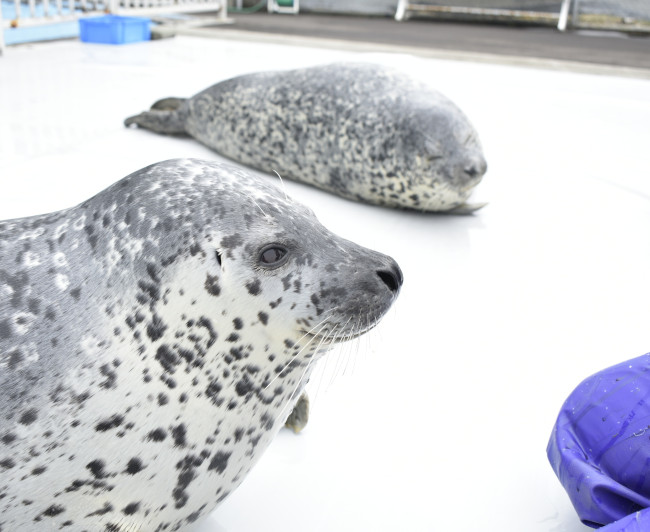

Monbetsu City Seal Sea Paradise
For more information, visit the Monbetsu City Seal Paradise Website Here!

While there are many seal aquatic seal protection and rehabilitation centers around the world, centers such as the Monbetsu City Seal Paradise, or Okhotsk Tokkari (アザラシシーパラダイス) Center, has garnered a large following online due to the popularity of their seals.Located in Mombetsu Marine Park, this is Japan's only seal protection facility that rescues injured or weakened seals and returns them to the sea. "Tokkari" means seal in Ainu language, and more than 20 seals live at the facility. You can observe spotted seals and ringed seals floating in pools up close and watch their agile movements as they swiftly swim underwater. A "feeding experience" is currently being held where you can feed the seals directly. Currently, the facility is home to three spotted seals: Agu, Hiyori, and Kyoro.
The facility conducts protection activities aimed at returning seals to the wild - and recovered, healthy seals are released back to the Sea of Okhotsk. This cycle of protection and return to the wild is a valuable initiative practiced only at this facility in Japan. Adjacent to the Garinko II icebreaker dock and the Okhotsk Tower, it serves as a core facility of Mombetsu Marine Park where you can comprehensively learn about the nature and creatures of the Sea of Okhotsk, conveying the importance of seal ecology and conservation activities.